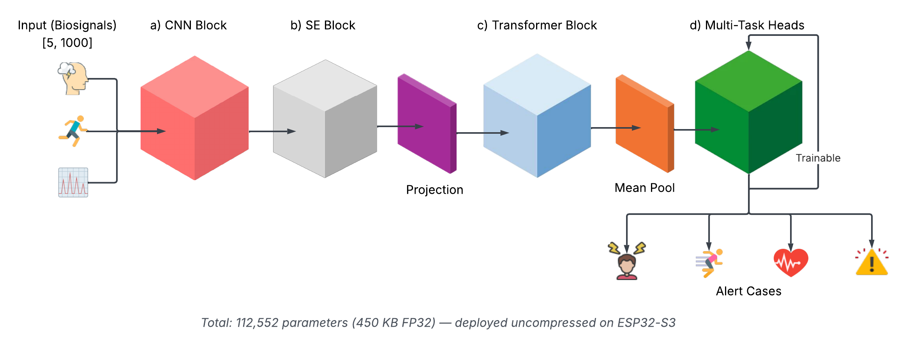
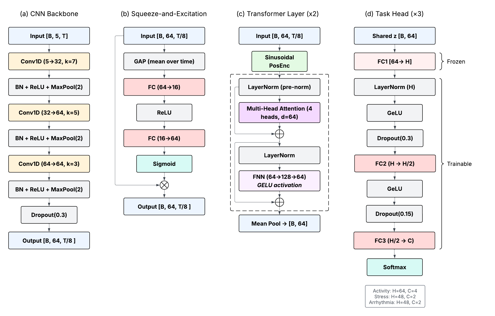
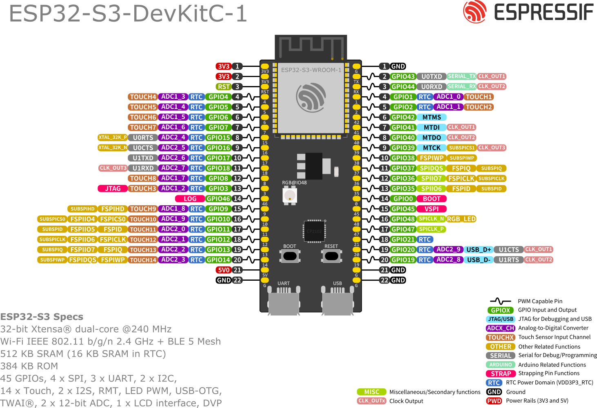
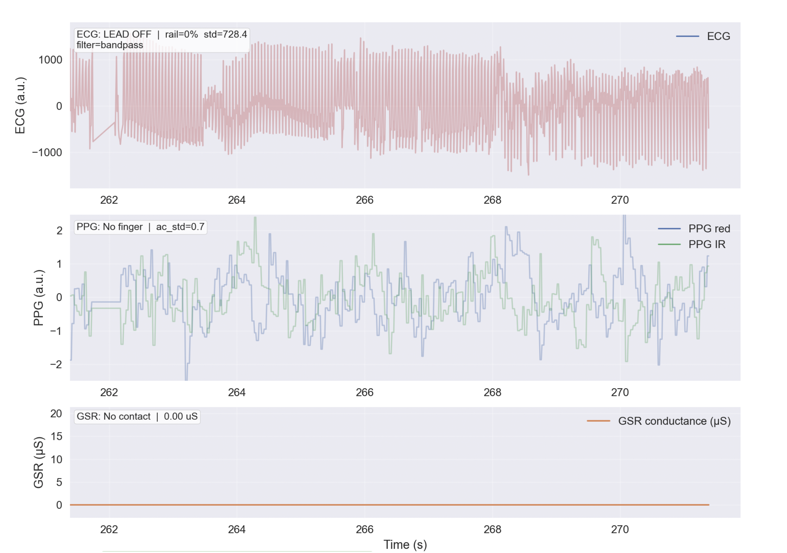
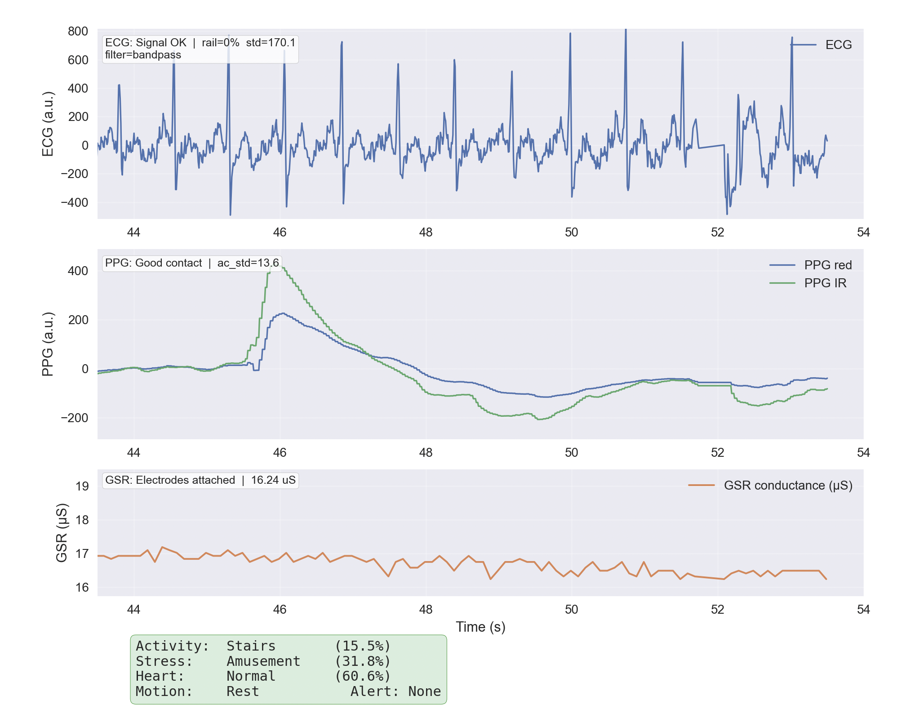
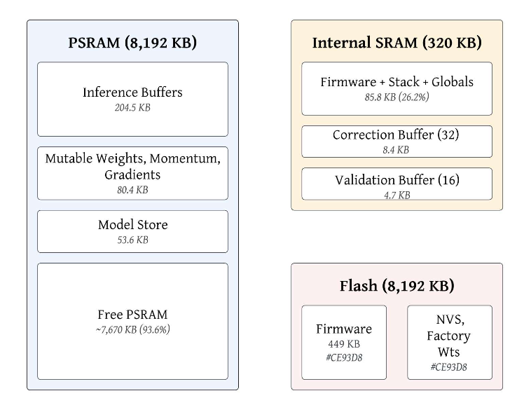
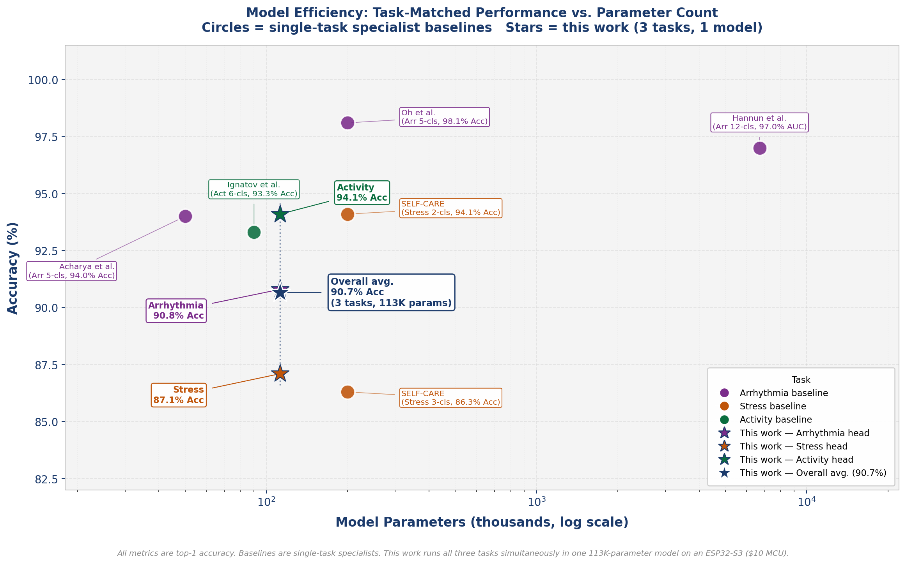
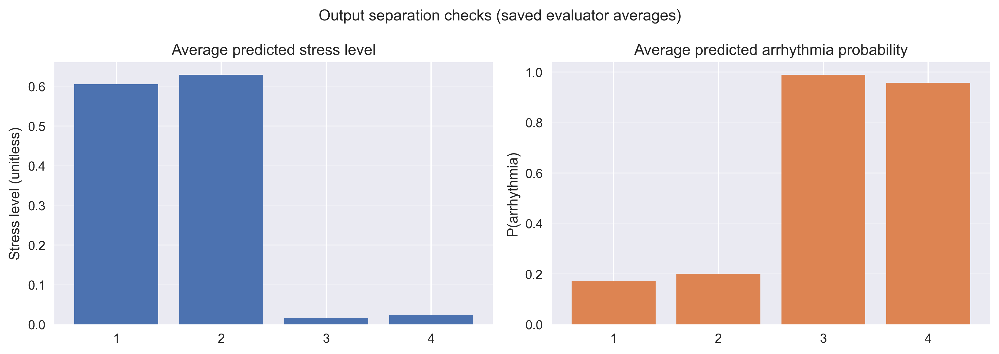

Architecture
The system uses a compact CNN–Transformer multi-task model with 112,552 parameters (~450 KB FP32) to predict activity (4 classes), stress (binary), and arrhythmia (binary) from 10-second windows at 100 Hz. Each window is a unified 5 × 1,000 tensor (ECG, PPG, AccX, AccY, AccZ). The full training model — CNN front-end, SE attention, 2-layer Transformer encoder, and three 3-layer task heads — is deployed on the ESP32-S3 without compression; the training model is identical to the deployed model.

Figure: end-to-end pipeline from multimodal sensor input through CNN, SE attention, Transformer-Lite encoder, and three parallel task heads.

Figure: multi-scale temporal convolution, RCB-SE blocks, Transformer-Lite encoder, and improved task-specific MLP heads.

Figure: hardware wiring for AD8232 ECG, MAX30102 PPG, MPU6050 accelerometer, and Grove GSR on ESP32-S3 (ADC and I²C).

Figure: ESP32-S3-DevKitC-1 pin layout used for sensor interfacing and firmware deployment.
ESP32 Deployment
The prototype was validated on ESP32-S3-N8R8 hardware with ECG, PPG, and IMU sensors active. Firmware performs acquisition, IIR filtering, sliding-window buffering, multi-task inference, and motion-aware alerting. EDA/GSR is retained in the live sensing pipeline as supplementary autonomic context; the deployed inference tensor uses the five core channels listed below.



Measured On-Device Performance
- Total parameters: 112,552 (~450 KB FP32)
- Inference time: 2,338 ms / 10 s window
- Duty cycle: 23.4% · Energy: 1,263 mJ/inference
- Power draw: 0.54 W (5.23 V @ 0.1 A)
- Program flash: 750 KB sketch (767,936 B)
- Heap free/min: 293.7 / 288.5 KB
- PSRAM free/min: ~7.3 / ~7.2 MB
- Adaptive training episodes: 10–24 ms (mean 16 ms)
Deployed Input Channels
- Ch 0 — ECG (AD8232, ADC)
- Ch 1 — PPG (MAX30102, I²C 0x57)
- Ch 2 — Accel X (MPU6050, I²C 0x68)
- Ch 3 — Accel Y
- Ch 4 — Accel Z
Live pipeline also acquires Grove GSR/EDA; motion-aware alerts use accelerometer statistics directly.
Benchmark Results
Training used PPG-DaLiA, WESAD, and MIT-BIH (21,704 windows, 65 subjects) with strict subject-wise splits. Primary evaluation is on a held-out test set of 13 unseen subjects (10,134 windows), plus a four-case motion-aware alert benchmark (100 samples per case).
Held-Out Test Set (Model A, 13 subjects, 10,134 windows)
| Task | Samples | Accuracy | Precision | Recall | F1 | AUC |
|---|---|---|---|---|---|---|
| Activity (4 cls) | 5,251 | 94.1% | 95.3%* | — | 25.9%† | 0.731 |
| Stress (2 cls) | 1,283 | 87.1% | 88.1%* | 81.9%† | 81.9%† | 0.975 |
| Arrhythmia (2 cls) | 3,600 | 90.8% | 91.0%* | 64.6%† | 64.6%† | 0.879 |
*F1-weighted precision · †F1-macro recall/F1. Per-subject consistency: activity 93.9% ± 1.3%; arrhythmia 90.9% ± 14.1% across 10 MIT-BIH test subjects.
Arrhythmia Clinical Metrics (Held-Out Test Set)
| Metric | Value |
|---|---|
| Sensitivity | 36.0% |
| Specificity | 94.7% |
| AUC-ROC | 0.879 [0.862, 0.894] |
| PPV | 32.6% |
| NPV | 95.4% |
At the default threshold (0.50), the model prioritizes specificity for low-false-alarm screening. At the Youden-optimal threshold (0.11), recall rises to 87.4% with 77.6% specificity.
Four-Case Motion-Aware Alert Benchmark
| Case | Stress Acc. | Arrhy. Acc. | Alert Acc. | Alert Rate |
|---|---|---|---|---|
| Case 1: Stress + Sedentary | 99% | — | 96% | 100% |
| Case 2: Stress + Exercise | 89% | — | 97% (suppression) | 3% |
| Case 3: Arrhythmia + Sedentary | — | 87% | 82% | 99% |
| Case 4: Arrhythmia + Motion | — | 93% | 88% | 88% |
Calibrated thresholds: τa = 0.70 (arrhythmia), τs = 0.35 (stress). Average alert accuracy (Cases 1, 3, 4): 91.3% · False alert rate (Case 2): 3%.
Sensor Ablation (Model A, Held-Out Test Set)
| Configuration | Activity | Stress | Arrhythmia |
|---|---|---|---|
| Full model | 94.1% | 87.1% | 90.8% |
| w/o ECG | 88.7% (−5.4) | 76.8% (−10.3) | 6.6% (−84.2) |
| w/o PPG | 93.2% (−0.9) | 73.1% (−14.0) | 90.8% (±0.0) |
| w/o ACC (all axes) | 70.3% (−23.9) | 29.2% (−57.9) | 91.2% (+0.4) |
| w/o SE attention | 79.4% (−14.8) | 36.9% (−50.1) | 86.9% (−3.9) |
Figure: confusion matrices for activity, stress, and arrhythmia heads on the held-out test set (13 unseen subjects).


Documents
Full M.S. thesis, CSUNposium poster, and CSUN ScholarWorks deposit.
M.S. Thesis (PDF)
CSUNposium Poster (PDF)
EdgeGuard · On-Device Adaptation Concept
EdgeGuard is the overall idea behind safe on-device neural network adaptation on resource-constrained edge hardware — without a GPU, cloud connectivity, or external ML frameworks. This is a high-level summary of the approach explored in the thesis; full patent documentation is not published here.
Working title: Safe On-Device Neural Network Adaptation on Resource-Constrained Edge Hardware Without GPU or Cloud Dependency
- Freezes the 107,568-parameter CNN+SE+Transformer backbone and adapts only 4,984 classification-head parameters on-device.
- Uses feedback-driven backpropagation with zero-allocation, pre-allocated buffers suitable for bare-metal firmware.
- Enforces hardware resource gating on memory, temperature, timing, and CPU load before any training step.
- Maintains dual-slot model versioning with NVS flash persistence, A/B validation, rollback, and safety lockout.
- Implements nine concentric safety mechanisms to prevent on-device adaptation from degrading below baseline accuracy.
- Training episodes complete in 10–24 ms (mean 16 ms) on ESP32-S3, adding only 8 KB flash overhead.
- Maps to MCU, SoC, and FPGA targets through a hardware abstraction layer; demonstrated on ESP32-S3 at sub-$10 BOM.